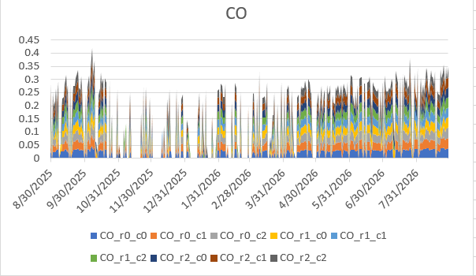
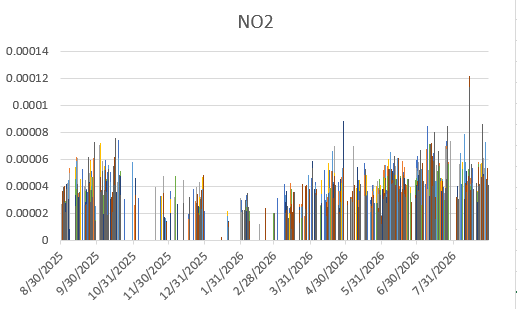
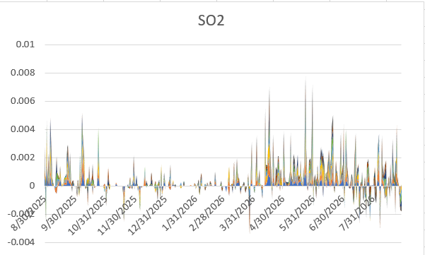
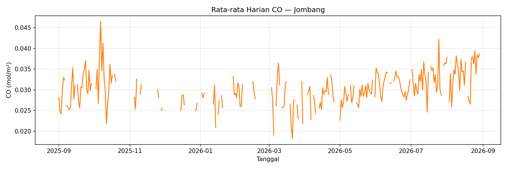
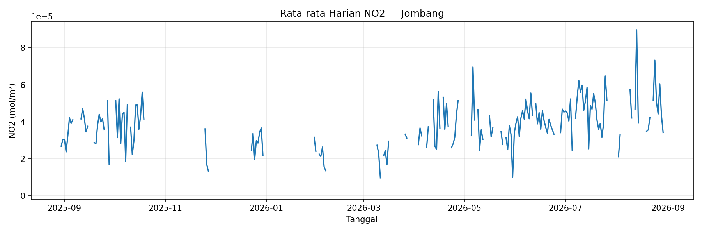
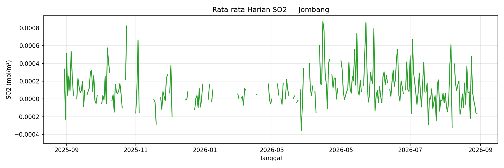
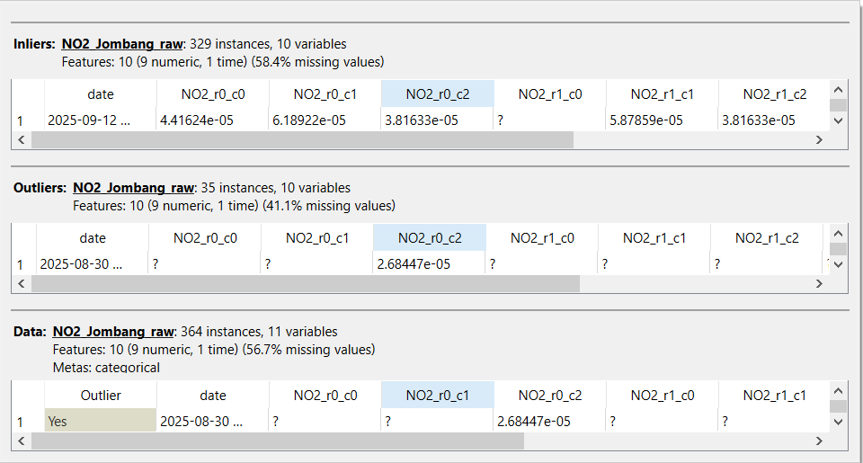
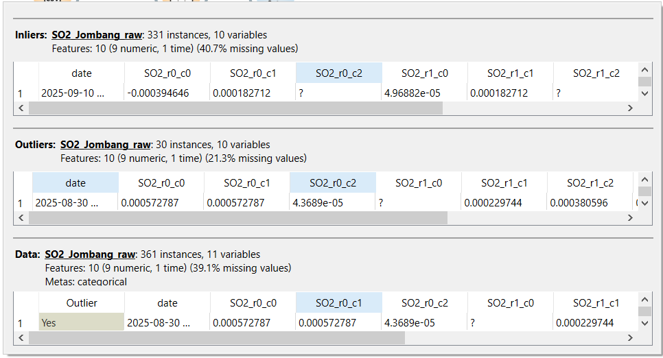

Data Understanding#
Mengenal Data Sebelum Bicara Kesimpulan#
Sebelum masuk ke analisis lebih jauh, penting untuk benar-benar mengenal data yang kita punya — dari mana asalnya, apa arti tiap kolomnya, dan apakah ada hal ganjil yang perlu diwaspadai. Bagian ini menjelaskan tiga polutan yang menjadi fokus proyek: NO2, CO, dan SO2, sekaligus mengeksplorasi data mentah yang berhasil dikumpulkan dari citra satelit Sentinel-5P untuk wilayah Jombang.
1. Sumber Data#
Aspek |
Keterangan |
|---|---|
Sumber |
Satelit Sentinel-5P (program Copernicus) |
Platform akses |
OpenEO ( |
Wilayah |
Jombang, Jawa Timur (dibatasi via GeoJSON bounding box) |
Rentang waktu |
2025-08-30 s.d. 2026-08-29 (± 1 tahun) |
Resolusi spasial |
Grid 3×3 (9 titik pengamatan per hari, per polutan) |
Format file mentah |
NetCDF ( |
2. Apa Itu NO2, CO, dan SO2?#
🟤 NO2 — Nitrogen Dioksida#
NO2 adalah gas hasil pembakaran bahan bakar fosil pada suhu tinggi, paling banyak dihasilkan dari kendaraan bermotor, pembangkit listrik, dan aktivitas industri. Gas ini menjadi salah satu indikator utama polusi udara perkotaan karena erat kaitannya dengan volume lalu lintas.
Dampak: Mengiritasi saluran pernapasan, memperburuk asma, dan berkontribusi pada pembentukan ozon permukaan serta hujan asam.
⚫ CO — Karbon Monoksida#
CO adalah gas tidak berwarna dan tidak berbau, dihasilkan dari pembakaran tidak sempurna — misalnya knalpot kendaraan, generator, pembakaran sampah, atau kebakaran hutan.
Dampak: Mengikat hemoglobin dalam darah menggantikan oksigen, sehingga dalam konsentrasi tinggi bisa menyebabkan sesak napas, pusing, bahkan keracunan akut.
🟡 SO2 — Sulfur Dioksida#
SO2 dihasilkan dari pembakaran bahan bakar yang mengandung belerang, seperti batu bara dan minyak bumi, umumnya dari pembangkit listrik tenaga fosil dan kawasan industri berat.
Dampak: Mengiritasi sistem pernapasan, memicu hujan asam, serta merusak vegetasi dan material bangunan dalam jangka panjang.
Prediksi Kadar Polusi Udara di Daerah Jombang#
1. Pendahuluan#
Notebook ini mendokumentasikan pipeline lengkap untuk pengambilan data, preprocessing, dan pemodelan prediksi kadar Nitrogen Dioksida (NO2),Karbon Monoksida (CO), dan Sulfur Dioksida (SO2) di wilayah Jombang . Data diperoleh dari Sentinel-5P melalui platform OpenEO.
2. Pengambilan Data#
2.1 Koneksi ke OpenEO#
Koneksi ke server OpenEO dilakukan menggunakan library openeo dengan autentikasi OIDC.
import openeo
connection = openeo.connect("openeo.dataspace.copernicus.eu").authenticate_oidc()
2.2 Definisi Area of Interest (AOI)#
Area penelitian didefinisikan menggunakan polygon GeoJSON yang mencakup wilayah Jombang, Jawa Timur.
Parameter |
Nilai |
|---|---|
Batas Barat (West) |
112.17337695661712 |
Batas Selatan (South) |
-7.608680889617773 |
Batas Timur (East) |
112.29947621158374 |
Batas Utara (North) |
-7.515673004000362 |
2.3 Load Data Sentinel-5P#
2.3.1 Load Data Sentinel-5P NO2#
Data NO2 dari koleksi SENTINEL_5P_L2 diambil untuk rentang waktu 2025-8-30 hingga 2026-8-30 dengan band NO2.
s5post = connection.load_collection(
"SENTINEL_5P_L2",
temporal_extent=["2025-8-30", "2026-8-30"],
spatial_extent={
"west": 112.17337695661712,
"south": -7.608680889617773,
"east": 112.29947621158374,
"north": -7.515673004000362
},
bands=["NO2"],
)
2.3.2 Load Data Sentinel-5P CO#
Data CO dari koleksi SENTINEL_5P_L2 diambil untuk rentang waktu 2025-8-30 hingga 2026-8-30 dengan band CO.
aoi = {"type": "Polygon",
"coordinates": [
[
[112.19390412051746, -7.50982809342085],
[112.31010499365027, -7.50982809342085],
[112.31010499365027, -7.596858714299557],
[112.19390412051746, -7.596858714299557],
[112.19390412051746, -7.50982809342085]
]
]
}
s5co = connection.load_collection(
"SENTINEL_5P_L2",
temporal_extent=["2025-08-30", "2026-08-30"],
spatial_extent={
"west": 112.17337695661712,
"south": -7.608680889617773,
"east": 112.29947621158374,
"north": -7.515673004000362
},
bands=["CO"],
)
2.3.3 Load Data Sentinel-5P SO2#
Data SO2 dari koleksi SENTINEL_5P_L2 diambil untuk rentang waktu 2025-8-30 hingga 2026-8-30 dengan band SO2.
aoi = {"type": "Polygon",
"coordinates": [
[
[112.19390412051746, -7.50982809342085],
[112.31010499365027, -7.50982809342085],
[112.31010499365027, -7.596858714299557],
[112.19390412051746, -7.596858714299557],
[112.19390412051746, -7.50982809342085]
]
]
}
s5so2 = connection.load_collection(
"SENTINEL_5P_L2",
temporal_extent=["2025-08-30", "2026-08-30"],
spatial_extent={
"west": 112.17337695661712,
"south": -7.608680889617773,
"east": 112.29947621158374,
"north": -7.515673004000362
},
bands=["SO2"],
)
2.4 Agregasi Temporal dan Spasial#
Data diagregasi secara temporal (harian) untuk menghindari duplikasi, kemudian diagregasi secara spasial menggunakan mean agar menghasilkan satu nilai per hari untuk seluruh area sama, Untuk agregasi temporal dan Spasial dariNO2, CO dan SO2 mempunyai proses yg sama namun cukup mencocokan variabelnya saja Untuk NO2
# Agregasi harian
s5p_no2_daily = s5no2.aggregate_temporal_period(reducer="mean", period="day")
# Agregasi spasial
s5p_no2_aoi = s5p_no2_daily.aggregate_spatial(reducer="mean", geometries=aoi)
Untuk CO
# Agregasi harian
s5p_co_daily = s5co.aggregate_temporal_period(reducer="mean", period="day")
# Agregasi spasial
s5p_co_aoi = s5p_co_daily.aggregate_spatial(reducer="mean", geometries=aoi)
Untuk CO
# Agregasi harian
s5p_so2_daily = s5so2.aggregate_temporal_period(reducer="mean", period="day")
# Agregasi spasial
s5p_so2_aoi = s5p_20_daily.aggregate_spatial(reducer="mean", geometries=aoi)
2.5 Eksekusi Batch Job#
Job dieksekusi secara batch dan hasilnya disimpan dalam format NetCDF.
job = s5post.execute_batch(title="NO2 in Jombang", outputfile="NO2Jombang.nc")
3. Dokumentasi Visual — Eksplorasi Awal dan Deteksi Outlier#
Sebelum masuk ke tahap preprocessing yang lebih rapi, dilakukan eksplorasi visual awal menggunakan Excel (untuk melihat pola time series mentah) dan Orange Data Mining (untuk deteksi outlier antar polutan).
3.1 Grafik Time Series Mentah (Excel)#
NO2 dan CO — Grafik Batang per Titik Grid


Grafik di atas menampilkan visualisasi awal konsentrasi CO dan NO2 dari seluruh titik grid (9 titik per hari) menggunakan Excel. Karena data ditampilkan per titik grid tanpa agregasi, pola yang muncul masih berupa kumpulan batang yang saling bertumpuk (untuk CO) atau berdampingan (untuk NO2), sehingga tren keseluruhan kualitas udara belum terlihat jelas dan perlu diproses lebih lanjut dengan menghitung rata-rata harian.
SO2 — Grafik Area Bertumpuk

Grafik SO2 menunjukkan pola fluktuasi yang tidak stabil, ditandai dengan munculnya nilai negatif pada sumbu Y — sesuatu yang secara fisik tidak mungkin terjadi pada konsentrasi gas sebenarnya. Hal ini mengindikasikan adanya noise atau outlier pada data mentah SO2 yang perlu ditangani lebih lanjut sebelum data dapat dianalisis secara akurat.
3.2 Grafik Time Series (Python)#
Untuk melihat tren kualitas udara secara lebih jelas dan akurat dibanding grafik Excel sebelumnya, data mentah tiap polutan (grid 3×3) diolah menggunakan Python: dihitung rata-rata hariannya, lalu divisualisasikan sebagai grafik time series menggunakan library pandas dan matplotlib.
3.2.1 Penjelasan Kode#
Membaca data dan menghitung rata-rata harian
def hitung_rata_rata_harian(filepath, prefix):
df = pd.read_csv(filepath, parse_dates=['date'])
grid_cols = [c for c in df.columns if c.startswith(prefix)]
df['mean'] = df[grid_cols].mean(axis=1, skipna=True)
hasil = df[['date', 'mean']].sort_values('date').reset_index(drop=True)
return hasil
Fungsi ini membaca file CSV mentah (misalnya NO2_Jombang_raw.csv), lalu mengambil seluruh kolom grid (NO2_r0_c0 sampai NO2_r2_c2) dan menghitung rata-ratanya untuk tiap baris (tiap hari). Parameter skipna=True memastikan nilai yang hilang (NaN) diabaikan saat menghitung rata-rata, bukan dianggap nol — sehingga hasil rata-ratanya tetap representatif meski ada data yang tidak lengkap. Data juga diurutkan berdasarkan tanggal (sort_values('date')) agar grafik time series berjalan kronologis.
Membuat grafik time series
plt.figure(figsize=(12, 4))
plt.plot(no2_daily['date'], no2_daily['mean'], color='tab:blue')
plt.title('Rata-rata Harian NO2 — Jombang')
plt.xlabel('Tanggal')
plt.ylabel('NO2 (mol/m²)')
plt.grid(alpha=0.3)
plt.tight_layout()
plt.savefig('grafik_NO2.png', dpi=150)
plt.show()
Kode ini memplot nilai rata-rata harian (mean) terhadap tanggal (date), menghasilkan grafik garis (line chart) yang menunjukkan naik-turunnya konsentrasi polutan dari waktu ke waktu. Proses yang sama diulang untuk CO dan SO2 dengan mengganti sumber data dan warna garis.
3.2.2 Hasil Visualisasi dan Interpretasi#
Time Series CO

Grafik time series CO menunjukkan konsentrasi yang berfluktuasi pada rentang 0.018–0.046 mol/m², dengan pola yang relatif stabil pada periode Agustus 2025–Februari 2026. Memasuki Maret 2026 hingga Agustus 2026, terlihat kecenderungan tren naik secara bertahap, mengindikasikan peningkatan aktivitas pembakaran (kendaraan bermotor atau industri) menjelang pertengahan hingga akhir periode pengamatan. Beberapa celah kosong pada grafik (misalnya sekitar November–Desember 2025) menunjukkan hari-hari tanpa data valid akibat gangguan tutupan awan pada citra satelit.
Time Series NO2

Konsentrasi NO2 bergerak pada rentang 0.0000009–0.00009 mol/m², dengan pola yang senada dengan CO — relatif landai pada paruh pertama periode (September 2025–Maret 2026), kemudian meningkat signifikan pada paruh kedua (April–Agustus 2026), dengan puncak tertinggi terjadi pada Agustus 2026. Tren naik ini konsisten dengan pola CO, yang mengindikasikan kedua polutan kemungkinan berasal dari sumber emisi yang serupa, yaitu aktivitas kendaraan bermotor dan pembakaran bahan bakar fosil.
Time Series SO2

Berbeda dari NO2 dan CO, grafik SO2 menunjukkan pola yang jauh lebih fluktuatif dan tidak stabil, dengan rentang nilai dari -0.0004 hingga 0.0008 mol/m². Adanya nilai negatif pada beberapa titik waktu merupakan temuan penting, karena secara fisik konsentrasi gas tidak mungkin bernilai negatif — ini mengindikasikan noise atau kesalahan pengukuran pada data mentah SO2 yang perlu dibersihkan pada tahap preprocessing. Lonjakan tajam (spike) yang muncul berulang, terutama pada periode April–Juni 2026, juga mengindikasikan adanya outlier yang signifikan dibanding pola umum data.
3.3 Deteksi Outlier dengan Orange Data Mining#
NO2

Proses deteksi outlier pada data NO2 menghasilkan 329 data inlier (normal) dan 35 data outlier dari total 364 hari pengamatan, dengan persentase missing value sebesar 58.4% pada kelompok inlier. Outlier terdeteksi antara lain pada tanggal 30 Agustus 2025, yang menunjukkan nilai konsentrasi NO2 menyimpang signifikan dari pola umum data pada titik grid tersebut.
SO2

Hasil deteksi outlier pada data SO2 menunjukkan 331 data inlier dan 30 data outlier dari 361 baris data, dengan tingkat missing value sebesar 40.7% pada kelompok inlier. Menariknya, ditemukan nilai negatif pada beberapa titik grid (misalnya -0.000394646), yang mengindikasikan adanya noise atau kesalahan pengukuran pada citra satelit, mengingat secara fisik konsentrasi gas tidak mungkin bernilai negatif.
3.4 Catatan Penting#
Ditemukannya nilai negatif pada SO2 (baik di grafik Excel maupun hasil deteksi outlier Orange) merupakan temuan penting dalam tahap Data Understanding — ini menjadi sinyal bahwa preprocessing untuk SO2 memerlukan penanganan khusus, seperti pembersihan nilai negatif yang secara fisik tidak valid, sebelum data dapat digunakan untuk analisis tren maupun pemodelan lebih lanjut.